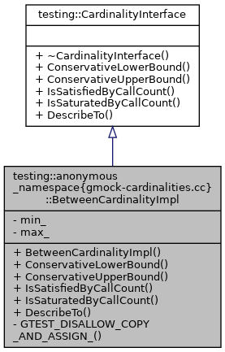
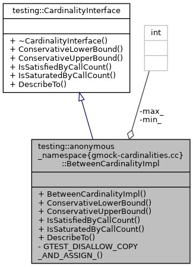
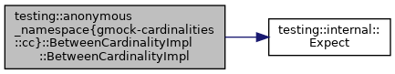
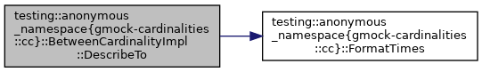

Inheritance diagram for testing::anonymous_namespace{gmock-cardinalities.cc}::BetweenCardinalityImpl:

Collaboration diagram for testing::anonymous_namespace{gmock-cardinalities.cc}::BetweenCardinalityImpl:

Public Member Functions | |
| BetweenCardinalityImpl (int min, int max) | |
| virtual int | ConservativeLowerBound () const |
| virtual int | ConservativeUpperBound () const |
| virtual bool | IsSatisfiedByCallCount (int call_count) const |
| virtual bool | IsSaturatedByCallCount (int call_count) const |
| virtual void | DescribeTo (::std::ostream *os) const |
 Public Member Functions inherited from testing::CardinalityInterface Public Member Functions inherited from testing::CardinalityInterface | |
| virtual | ~CardinalityInterface () |
Private Member Functions | |
| GTEST_DISALLOW_COPY_AND_ASSIGN_ (BetweenCardinalityImpl) | |
Private Attributes | |
| const int | min_ |
| const int | max_ |
Detailed Description
Definition at line 50 of file gmock-cardinalities.cc.
Constructor & Destructor Documentation
◆ BetweenCardinalityImpl()
|
inline |
Definition at line 52 of file gmock-cardinalities.cc.
References testing::internal::Expect().
void Expect(bool condition, const char *file, int line, const string &msg)
Definition: gmock-internal-utils.h:294
const int max_
Definition: gmock-cardinalities.cc:89
Here is the call graph for this function:

Member Function Documentation
◆ ConservativeLowerBound()
|
inlinevirtual |
Reimplemented from testing::CardinalityInterface.
Definition at line 74 of file gmock-cardinalities.cc.
◆ ConservativeUpperBound()
|
inlinevirtual |
Reimplemented from testing::CardinalityInterface.
Definition at line 75 of file gmock-cardinalities.cc.
◆ DescribeTo()
|
virtual |
Implements testing::CardinalityInterface.
Definition at line 108 of file gmock-cardinalities.cc.
References testing::anonymous_namespace{gmock-cardinalities.cc}::FormatTimes().
internal::string FormatTimes(int n)
Definition: gmock-cardinalities.cc:95
const int max_
Definition: gmock-cardinalities.cc:89
Here is the call graph for this function:

◆ GTEST_DISALLOW_COPY_AND_ASSIGN_()
|
private |
◆ IsSatisfiedByCallCount()
|
inlinevirtual |
Implements testing::CardinalityInterface.
Definition at line 77 of file gmock-cardinalities.cc.
const int max_
Definition: gmock-cardinalities.cc:89
◆ IsSaturatedByCallCount()
|
inlinevirtual |
Member Data Documentation
◆ max_
|
private |
Definition at line 89 of file gmock-cardinalities.cc.
◆ min_
|
private |
Definition at line 88 of file gmock-cardinalities.cc.
The documentation for this class was generated from the following file:
- smacc_sm_reference_library/sm_panda_moveit/libfranka/3rdparty/googletest/googlemock/src/gmock-cardinalities.cc